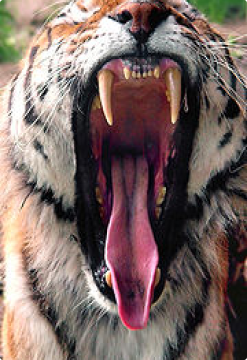

Тигры охотятся исключительно в одиночку, используя два приёма охоты: подкрадывание к добыче и ожидание её в засаде. Первый приём чаще используется тиграми зимой, второй — летом. Тигры обычно выслеживают и поджидают добычу на тропах и возле водопоев. Выследив животное, тигр подкрадывается к нему с подветренной стороны. При этом он перемещается короткими осторожными шагами, часто припадая к земле. Подобравшись к добыче на наиболее близкое расстояние, он настигает её несколькими огромными прыжками — самым стремительным способом передвижения. При ожидании в засаде тигр обычно выжидает, лёжа под ветром, а при приближении делает быстрый рывок на короткую дистанцию.
